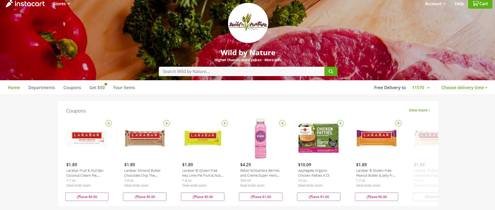

Instacart Market Basket Analysis
Posted on Feburary 6, 2020

Introduction
Formulating possible business problem statements without domain expert or a business stakeholder.
Instacart is a same-day delivery and pick up service that allows consumers to shop through the company’s mobile app or website from selected grocery stores, such as Trader Joe’s, Costco and Fairway. The company has dedicated employees who shop groceries from the selected stores and deliver to the consumers’ doorsteps. The way the company generates revenue is by adding markup on prices for specific stores, delivery and membership fee. Hence, the main business objective for the organization is to, not only increase the number of customer memberships but also improve the repeat visit and orders. Predicting consumer engagement and behavior with the products and grocery stores have a huge impact on Instacart’s success.
The main purpose of this analysis is to perform an exploratory analysis and formulate incremental business problems to increase revenue. In order to do that, we will rely on historical data provided by Instacart. Further information about this publicly released dataset can be found here: https://www.instacart.com/datasets/grocery-shopping-2017
About the Data
The dataset is provided by Instacart for a Kaggle Competition, which are relational set of files describing customers’ orders over time. The dataset is anonymized and contains a sample of over 3 million grocery orders from more than 200,000 Instacart users. For each user, the dataset provides between 4 and 100 of their orders, with the sequence of products purchased in each order. The dataset also provides the week and hour of day the order was placed and relative measure of time between orders.
The description of each variable is outlined below;
orders dataset: order_id: order identifier, user_id: customer identifier, eval_set: which evaluation set this order belongs in (see train and prior dataset described below), order_number: the order sequence number for this user (1 = first, n = nth), order_dow: the day of the week the order was placed on, order_hour_of_day: the hour of the day the order was placed on, days_since_prior: days since the last order, capped at 30 (with NAs for order_number = 1)
products dataset: product_id: product identifier, product_name: name of the product, aisle_id: foreign key, department_id: foreign key
aisles dataset: aisle_id: aisle identifier, aisle: the name of the aisle
departments dataset: department_id: department identifier, department: the name of the department
order_products_prior and train datasets: order_id: foreign key, product_id: foreign key, add_to_cart_order: order in which each product was added to cart, reordered: 1 if this product has been ordered by this user in the past, 0 otherwise, “prior”: orders prior to that users most recent order, “train”: training data supplied to participants of the competition, “test”: test data reserved for machine learning competition
Data Collection and Cleaning
Ideally, prior to the data collection phase, we would have liked to define the data requirements based on problem statement in order to collect the needed data. However, we are executing a different approach in this case, where we really don't know what problems instacart business have and we want to formulate problems with the available data. This is completely different from a data science project process perspective, where we usually want to outline business understanding with the domain experts and stakeholders as a first step and further define collection methods, data collecting, cleaning and exploratory analysis. Let’s start with importing our packages, load each data set and take a brief look at them.


We have around 50,000 products with product id, name, aisle id and department id. All data types are as expected and we don't have any missing values.

There are 134 aisles with aisle id and aisle name. The data types are as expected and we don't have any missing values. As you may notice, aisle_id variable is a common variable with products dataframe. We can merge these two dataframes to see what products belong to what aisle.

There is a total of 21 departments with department names and ids. The data types are as expected and we don't have any missing values. We have another common variable “department_id” with products dataframe. We can merge the departments dataframe to see what product belongs to which department.

As explained in the variable descriptions, order products prior data set gives us the insights on the orders that are ordered prior to users most recent order. We have over 3 million of these orders. The data types are correct and there are no missing values. We also have product_id common variable where we can merge this dataset with products to see what product maps to what order.

We have been provided over 1.3 million training data, with correct data types and no missing values. At this point, the data sets provided by instacart seems to be pretty clean and besides merging aisles, departments, products and orders data sets, we didn't need to do much of data wrangling.
Data Exploration
At this stage, we will look at the updated version of the data set individually, and gather insights to start creating possible business problems.


What we are seeing here is that 23986 customers made only 4 orders, 19590 customers only made 5 orders and so on… As the number of orders made by customers goes up, the number of customers that makes those orders goes down. Majority of the customers make 4 to 12 orders. If a business finds a way to increase the number of orders from repeat customers, it can increase the revenue.


Majority of the purchases are being made on Monday and Tuesday followed by Sunday. Consumers might be making their weekly grocery shopping at the first and second day of the week. There isn't a huge gap between the other days of the week either. For example, the difference between Wednesday and Tuesday is not that significant.

Majority of the purchases are made between 10am to 4pm.


Majority of the customers do their purchases weekly and monthly. Considering the fact that majority of the customers also place their orders Monday or Tuesday of the week, placing an order might require planning effort. There is a slight chance this might be due to a non seamless ordering process.


We can see that, based on the basket size distribution, the majority of the customers purchased 5 to 6 products per order. Considering the low amount of orders from repeat customers, low product amount per customer can be a huge problem for the business in terms of revenue.


Top ten reordered items match exactly to the top ten items ordered in general. Additionally, most of the items on top ten purchases are in the fresh fruits aisle.


Top aisles are fresh fruits, fresh vegetables, packaged vegetables and fruit, followed by yogurt and packaged cheese.


As we figured out earlier, the highest percentage of orders and the highest basket size is Monday and Tuesday.


As we found out earlier, the highest ordered products are Banana, Bag of Organic Bananas, Organic Baby Spinach and Organic Strawberries. Interesting insight here is that, out of the top 4 products, Banana has the most proportion of orders in a day for every but the other four top products do not have any contribution to the proportion of orders on Wednesday, Thursday, Friday, Saturday and Sunday. Can this be related to an item inventory issue?


The top department is produce, followed by dairy eggs and snacks. Addition to the general individual preference and needs, there might be other reasons why consumers are not purchasing from other departments. For example, if instacart has the biggest mark up for canned goods, but the user experience within the instacart website or app does not entice the consumer for canned goods, regardless of the consumer needs the order amount on canned goods will be low.
The datasets are quite big and have many variables that we can analyze. Similar to what we have at our earlier learning associations article, we can further look at association rules in detail between products (even though unstacking and converting the existing large dataset to a transactional data set would be challenging), investigate consumer reordering patterns in terms of days and hours, reorder ratio vs the hour of the order and so on…
Conclusion
Looking at a variety of data science processes and methodologies, you will realize almost all of them have a similar approach, which starts with business understanding, outlining a business problem statement to validate and solve. However, we might run into situations where the domain expert, brand owner, business unit or stakeholder may not necessarily know or have the time to figure out what the business problem is. In most of these cases, they are looking at the product manager to identify, formulate the business problems and provide tangible recommendations to solve them.
In our instacart analysis, we can summarize possible business problems that might have an impact on revenue are;
Formulating and defining business problem statements is extremely important to find the right solution for business goals. In my earlier article on linear regression, I mentioned how problematic it is for some statisticians to start with data analysis without creating a problem statement, however, there are many cases where stakeholders expect data to drive and formulate these problem statements.